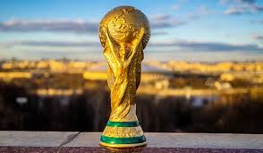
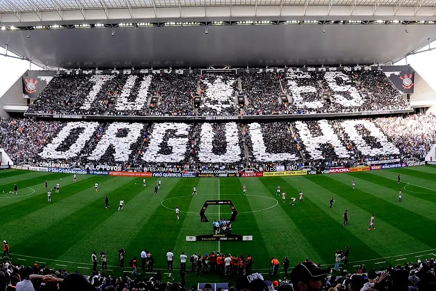

História do Futebol
O futebol moderno tem suas raízes na Inglaterra, onde as primeiras regras formais foram estabelecidas no século XIX.
Origens Antigas e Evolução
Antes disso, a China já jogava o "cuju" no século III a.C. Anos mais tarde, na Inglaterra, surgiram clubes clássicos como o Notts County e o Sheffield FC.
A primeira Copa do Mundo aconteceu em 1930 no Uruguai e o país anfitrião foi o grande campeão!
Principais Competisões

A Copa do Mundo FIFA é o torneio mais prestigioso do futebol, realizado a cada quatro anos desde 1930.
Impacto do Torneio
O Brasil lidera com os títulos, seguido por Alemanha e Itália. O evento move bilhões na economia e une culturas de todo o planeta.
Os únicos países pentacampeões do mundo até hoje são os brasileiros. Rumo ao hexa!
Futebol no Brasil

O Brasil transformou o futebol em arte. A Seleção Brasileira possui uma enorme tradição de craques e torcedores apaixonados.
Grandes Clubes e Torneios
Os principais torneios são o Brasileirão Série A e a Copa do Brasil. Clubes como Flamengo, São Paulo, Palmeiras, Corinthians e Santos possuem torcidas gigantescas.